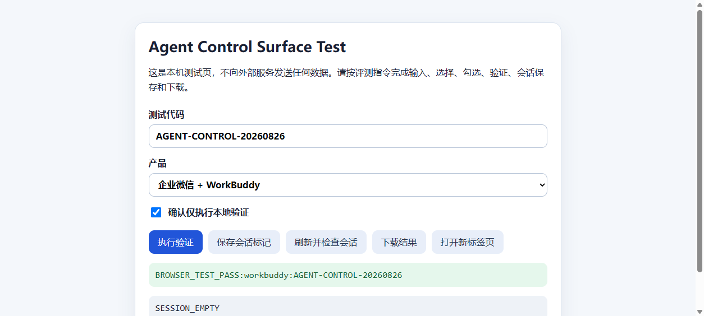

本次研究比较
- 飞书豆包工作
- 企业微信WorkBuddy
- 钉钉千问办公
每款产品只运行一次。页面不把单次结果换算为长期成功率。
本次能确认什么
三组产品的当前路线
产品定位来自官方资料，测试状态来自本地运行。两类证据分开显示。
功能矩阵
点击状态可查看依据。官方宣称、已实测和本次未发现使用不同标记。
| 模块 | 功能 | 飞书 + 豆包工作 | 企业微信 + WorkBuddy | 钉钉 + 千问办公 |
|---|
测评 1：完成一个 FDE 商业化任务
同一提示词、同一输入文件、一次运行。要求交付 XLSX、CSV、PPTX 和两份日志。
查看衡量指标
测评 2：浏览器与电脑操控
这里只写最小测试是否完成。搜索、脚本、CLI 和文件 API 不算浏览器或电脑操控。
| 产品组合 | 浏览器操作 | 电脑操控 | 客户端内浏览器 |
|---|

行业覆盖
命名客户、官方场景和能力推断分三级记录。飞书客户不直接等同于豆包工作客户。
| 行业 | 飞书 + 豆包工作 | 企业微信 + WorkBuddy | 钉钉 + 千问办公 | 证据说明 |
|---|
浏览器和电脑操控带来的商业机会
机会是否成立，取决于可靠性、权限、审计和人工接管，不取决于演示是否顺利。
来源与证据边界
官方资料说明产品能做什么，本地实测说明本次做成了什么，媒体内容补充真实使用场景。